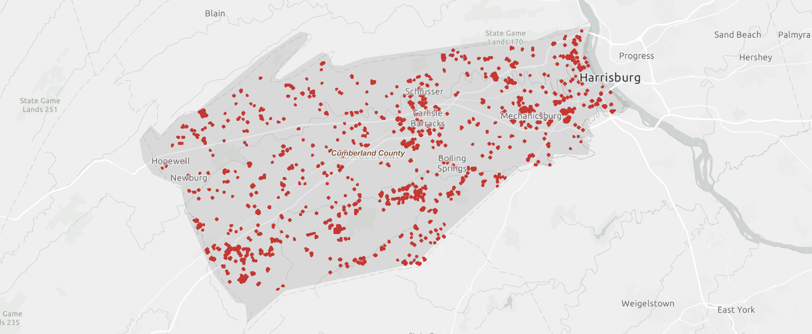

Quick Facts:
- Location: South Central Pennsylvania
- County: Dauphin County
- Population: Approximately 50,000 (city proper)
- Metro Area Population: Over 1.2 million
- Founded: 1791
- Key Neighboring Counties: Cumberland, Lancaster, York, Lebanon, Perry
- Area: 11.4 square miles
- Median Household Income: $76,758
Residential Crawl Spaces by County
Dauphin County
According to Dauphin County Tax Assessment Office - Dynamic Map
1,254 homes are located on crawl spaces in Dauphin County.
Cumberland County
According to Cumberland County Tax Assessment Office - Static Map
1,876 homes are located on crawl spaces in Cumberland County.
Crawl Space Concentration
In Pennsylvania, residential homes predominantly feature full or partial basements. According to a 2021 analysis by the National Association of Home Builders (NAHB), the Middle Atlantic division had approximately 63.5% of new residential homes built with full or partial basements.
Compare that to Richmond, where only 4% of residential homes are built on basements. This leads to a much lower concentration of crawl spaces (~2%).
Median Income
According to the U.S. Census Bureau’s 2018-2022 data, the median household income in the Harrisburg-Carlisle, PA Metro Area is $76,758. This figure is similar to the national median household income of $77,719.
Median Home Age
Harrisburg's housing stock is notably older (64 years) compared to the national average, which has positive implications for crawl space repairs and water remediation needs.
Harrisburg's median home age is similar to Richmond, VA, while significantly older than Charlotte's median home age (20 years).
Conclusion
Due to the low concentration of crawl spaces in the Harrisburg metropolitan area, a successful territory would most likely need to encompass a number of surrounding counties such as York, Lancaster, and Perry.
Services tailored to basements, such as sub-slab drain systems or exterior waterproofing, would be essential. Establishing relationships as a waterproofing subcontractor with new builders could be one way to offset the low number of crawl spaces.